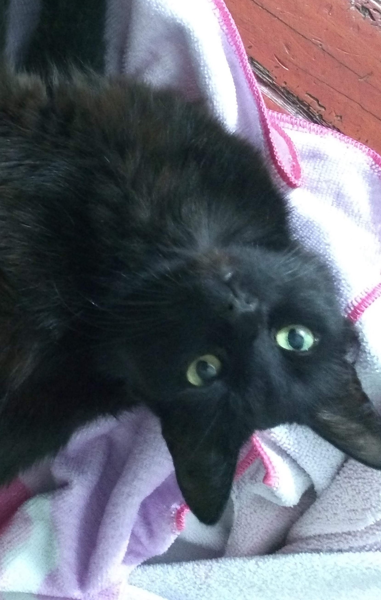
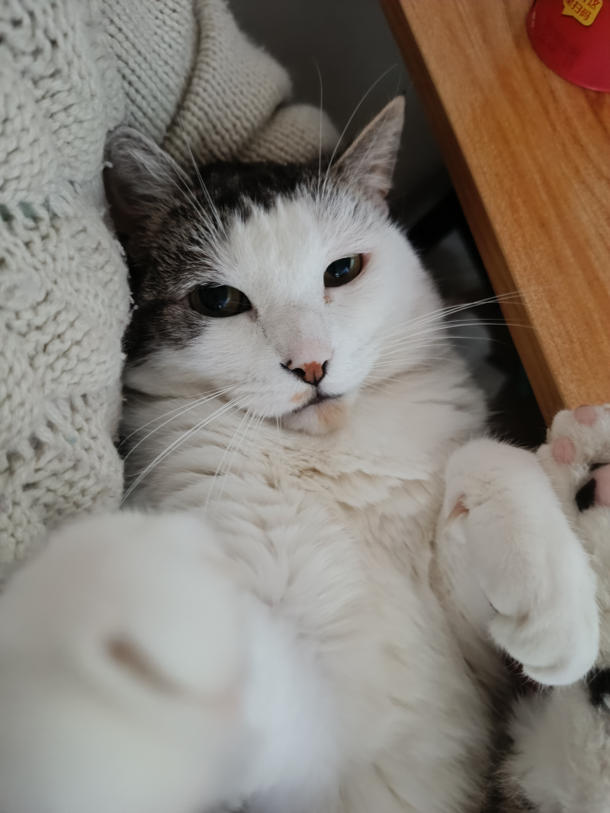
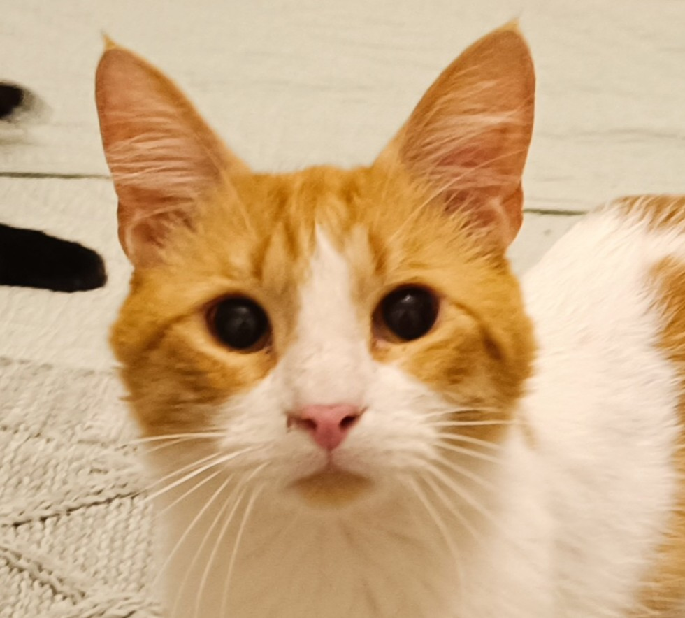
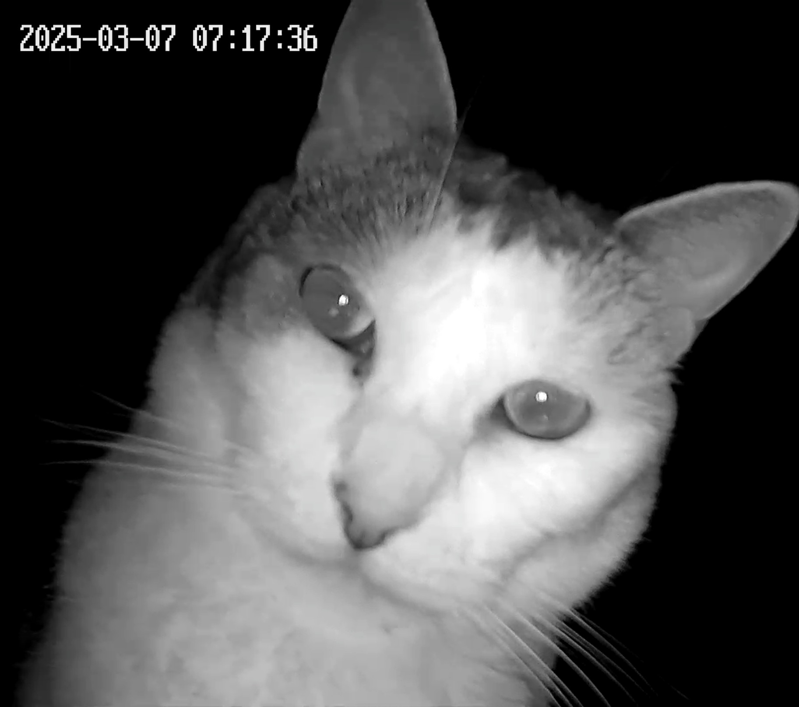

Jhonn Mongo
Santiago, Chile Catador de Churus | Experto en Control de Plagas | Salto de altura
Apasionado por el pollito en cualquiera de sus formas, croquetas, asado entre otras. Su especialidad en control de plagas son las polillas las cuales le han ayudado en su pasatiempo de salto de altura
Educación
Solicitudes de Conexión (2)

Mongi Mau

Gabriela María
Tus Conexiones (500+)

Tomioka Hikari

Elizabeth Bennet

Fitzwilliam Darcy

Dr Patitas

Lella Lombardi

McGato

Mike M.